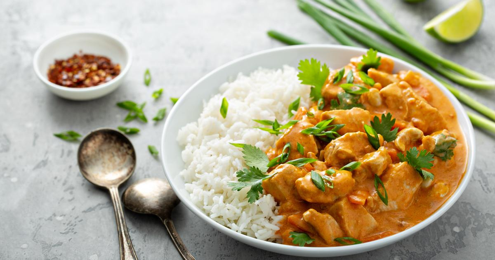

Poulet au curry

Ingredients
- 2oignons jaunes
- curry
- Cumin
- Piment
- Poivre
- Sel
- 4blancs de poulet
- 1pot de creme fraiche
Preparation
- Mettre une grande poele a chauffer. Couper les oignons en petits morceaux, et les faire cuire a feu assez fort.
- Remuer, en ajoutant du curry et du cumin.
- Couper les blancs de poulet en morceaux, les ajouter dans la poele et remettre des epices; tourner.
- Baisser le feu, et ajouter 2 culileres a soupe de creme.
- Apres 5 min de cuisson, remettre 2 culileres a soupe de creme et des epices (si necessaire).
- Si le plat est fait a l'avance, remettre un peu de creme au moment de rechauffer car la sauce s'evapore.